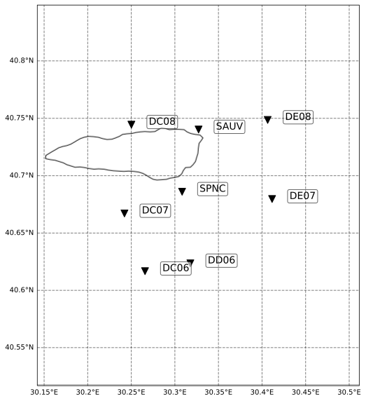

Make Network File
In this notebook, we compile the seismic network metadata that will be used recurrently through the workflow. We also scan the whole preprocessed data set to measure the daily data availability, which is essential for estimating the detection capability of the network at a given time.
[1]:
import fnmatch
import glob
import pandas as pd
import os
import sys
import matplotlib.pyplot as plt
import numpy as np
import obspy as obs
from BPMF.config import cfg
from BPMF.dataset import Network
from matplotlib.ticker import FixedLocator, FormatStrFormatter
[2]:
NETWORK_FILENAME = "network.csv"
AVAILABILITY_FILENAME = "availability.csv"
preproc_folder_name = f"preprocessed_{cfg.MIN_FREQ_HZ:.0f}_{cfg.MAX_FREQ_HZ:.0f}"
[3]:
# we check the station metadata and data availability between START_DATE and END_DATE
# these also define the start and end of the experiment
START_DATE = "2012-07-26"
END_DATE = "2012-07-26"
datelist = pd.date_range(start=START_DATE, end=END_DATE)
datelist
[3]:
DatetimeIndex(['2012-07-26'], dtype='datetime64[ns]', freq='D')
[4]:
# initialize data frames
daily_availability = pd.DataFrame()
network_metadata = pd.DataFrame(
columns=["network_code", "station_code", "longitude", "latitude", "elevation_m"]
)
[5]:
# even though this tutorial analyzes a single day, this notebook is written for an extended
# data base following the folder tree convention used here
for date in datelist:
row_name = date.strftime("%Y-%m-%d")
data_folder = os.path.join(
cfg.INPUT_PATH, str(date.year), date.strftime("%Y%m%d"), preproc_folder_name
)
resp_folder = os.path.join(
cfg.INPUT_PATH, str(date.year), date.strftime("%Y%m%d"), "resp"
)
data_filenames = glob.glob(os.path.join(data_folder, "*mseed"))
daily_network_metadata = pd.DataFrame(
columns=["network_code", "station_code", "longitude", "latitude", "elevation_m"]
)
for fname in data_filenames:
# we are only interested in the filename, not the entire path
fname = os.path.basename(fname)
# the filename contains information on the channel id
net_code, sta_code, loc_code, cha_code, ext = fname.split(".")
cha_code = cha_code[: cha_code.find("_")]
# print(net_code, sta_code, loc_code, cha_code)
daily_network_metadata.loc[
f"{net_code}.{sta_code}", ["network_code", "station_code"]
] = [net_code, sta_code]
for sta_id in daily_network_metadata.index:
# count the number of channels associated with sta_id
channels = fnmatch.filter(data_filenames, f"*{sta_id}.*mseed")
daily_availability.loc[row_name, sta_id] = len(channels)
if sta_id not in network_metadata.index:
station_inv = obs.read_inventory(
os.path.join(resp_folder, f"{sta_id}.xml")
)[0][0]
daily_network_metadata.loc[
sta_id, ["longitude", "latitude", "elevation_m"]
] = [station_inv.longitude, station_inv.latitude, station_inv.elevation]
network_metadata = pd.concat([network_metadata, daily_network_metadata]).drop_duplicates()
[6]:
network_metadata
[6]:
| network_code | station_code | longitude | latitude | elevation_m | |
|---|---|---|---|---|---|
| YH.DE07 | YH | DE07 | 30.411539 | 40.679661 | 40.0 |
| YH.DC07 | YH | DC07 | 30.24217 | 40.66708 | 164.0 |
| YH.DC08 | YH | DC08 | 30.25013 | 40.744438 | 162.0 |
| YH.DE08 | YH | DE08 | 30.406469 | 40.748562 | 31.0 |
| YH.SPNC | YH | SPNC | 30.3083 | 40.686001 | 190.0 |
| YH.DC06 | YH | DC06 | 30.265751 | 40.616718 | 555.0 |
| YH.SAUV | YH | SAUV | 30.3272 | 40.7402 | 170.0 |
| YH.DD06 | YH | DD06 | 30.31777 | 40.623539 | 182.0 |
[7]:
daily_availability
[7]:
| YH.DE07 | YH.DC07 | YH.DC08 | YH.DE08 | YH.SPNC | YH.DC06 | YH.SAUV | YH.DD06 | |
|---|---|---|---|---|---|---|---|---|
| 2012-07-26 | 3.0 | 3.0 | 3.0 | 3.0 | 3.0 | 3.0 | 3.0 | 3.0 |
Save the network metadata and data availability
[8]:
network_metadata.index.name = "station_id"
print(os.path.join(cfg.NETWORK_PATH, NETWORK_FILENAME))
network_metadata.to_csv(os.path.join(cfg.NETWORK_PATH, NETWORK_FILENAME), sep="\t")
# add two header lines
with open(os.path.join(cfg.NETWORK_PATH, NETWORK_FILENAME), "r+") as fnet:
content = fnet.read()
# move pointer to beginning of file
fnet.seek(0, 0)
# append lines at the beginning
fnet.write(f"{START_DATE}\t{END_DATE}\n")
# write the name of the components used on each station
# note: the list of components will be used to broadcast
# network waveforms into a single numpy.ndarray, so even
# if some stations only have one component we need to
# fill their missing components with zeros in order to
# keep consistent data dimensions across stations
fnet.write(f"N\tE\tZ\n")
fnet.write(content)
daily_availability.to_csv(os.path.join(cfg.NETWORK_PATH, AVAILABILITY_FILENAME))
../network/network.csv
Test reading the new network file with BPMF.dataset.Network
The csv file with network metadata is meant to be read into an instance of BPMF.dataset.Network.
[9]:
net = Network(NETWORK_FILENAME)
net.read()
[10]:
# list of station codes
net.stations
[10]:
array(['DE07', 'DC07', 'DC08', 'DE08', 'SPNC', 'DC06', 'SAUV', 'DD06'],
dtype='<U4')
[11]:
# inter-station distance in km
net.interstation_distances
[11]:
| DE07 | DC07 | DC08 | DE08 | SPNC | DC06 | SAUV | DD06 | |
|---|---|---|---|---|---|---|---|---|
| DE07 | 0.000000 | 14.388528 | 15.420268 | 7.663334 | 8.757172 | 14.183476 | 9.798210 | 10.087409 |
| DC07 | 14.388528 | 0.000000 | 8.616766 | 16.572942 | 5.972804 | 5.950485 | 10.842966 | 8.016817 |
| DC08 | 15.420268 | 8.616766 | 0.000000 | 13.212465 | 8.140696 | 14.249786 | 6.526482 | 14.592524 |
| DE08 | 7.663334 | 16.572942 | 13.212465 | 0.000000 | 10.820888 | 18.871834 | 6.760531 | 15.779586 |
| SPNC | 8.757172 | 5.972804 | 8.140696 | 10.820888 | 0.000000 | 8.501549 | 6.227020 | 6.982323 |
| DC06 | 14.183476 | 5.950485 | 14.249786 | 18.871834 | 8.501549 | 0.000000 | 14.668558 | 4.481904 |
| SAUV | 9.798210 | 10.842966 | 6.526482 | 6.760531 | 6.227020 | 14.668558 | 0.000000 | 12.979454 |
| DD06 | 10.087409 | 8.016817 | 14.592524 | 15.779586 | 6.982323 | 4.481904 | 12.979454 | 0.000000 |
[12]:
%config InlineBackend.figure_formats = ["svg"]
# plot a simple map with the station locations
fig = net.plot_map()
